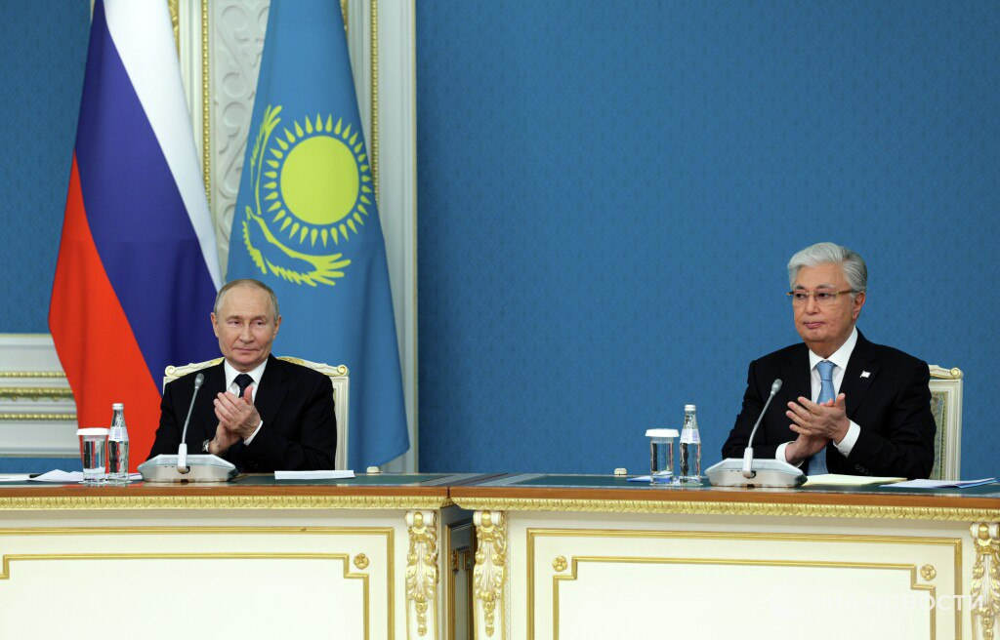

Совместное заявление Путина и Токаева об углублении стратегического партнерства в условиях нового глобального порядка. Главное:
Россия и Казахстан договорились осуществлять тесные контакты по линии спецслужб в целях борьбы с терроризмом
Россия и Казахстан заинтересованы в расширении газового сотрудничества, в том числе для транспортировки в третьи страны
Энергетическое сотрудничество России и Казахстана позволит укрепить регстабильность и энергетическую безопасность Центральной Азии
Стороны приветствуют увеличение доли взаимных расчетов в нацвалютах, что будет способствовать укреплению финансового суверенитета
Россия и Казахстан продолжат поддерживать друг друга, выступая против попыток подрыва внутриполитической стабильности
Россия и Казахстан подчеркивают важность глобального диалога между религиями и культурами
Страны выражают заинтересованность в формировании более справедливой и прозрачной международной торговой системы
Россия и Казахстан готовы вместе работать над сопряжением интеграционных процессов на евразийском пространстве, включая либерализацию торговли
Россия и Казахстан подтвердили намерение развивать диалог, укреплять внешнеполитическое взаимодействие в период стремительных изменений в мире
Страны договорились изучить перспективы двустороннего взаимодействия в сфере использования атомной энергии в мирных целях
Россия и Казахстан отмечают стратегическое значение выстраивания архитектуры стабильных и эффективных транспортных коридоров в Евразии
Страны отмечают важность работы по развитию ЕАЭС, созданию благоприятных условий для бизнеса
Россия и Казахстан высоко оценивают возможности коллективных действий ОДКБ по проведению миротворческих операций и реагированию на кризисы
普京和托卡耶夫关于在新的全球秩序中深化战略伙伴关系的联合声明。主要内容：
俄罗斯和哈萨克斯坦同意保持特种部队之间的密切联系，以打击恐怖主义
俄罗斯和哈萨克斯坦有兴趣扩大天然气合作，包括向第三国运输
俄罗斯和哈萨克斯坦的能源合作将加强中亚地区的稳定和能源安全
双方欢迎增加以本国货币相互结算的份额，这将有助于加强金融主权。
俄罗斯和哈萨克斯坦将继续相互支持，反对破坏国内政治稳定的企图
俄罗斯和哈萨克斯坦强调宗教和文化之间全球对话的重要性
各国表示有兴趣建立一个更加公平和透明的国际贸易体系
俄罗斯和哈萨克斯坦准备共同努力，将欧亚空间的一体化进程，包括贸易自由化联系起来
俄罗斯和哈萨克斯坦确认，在世界迅速变化之际，它们打算发展对话，加强外交政策合作。
两国同意探讨为和平目的利用核能的双边合作前景。
俄罗斯和哈萨克斯坦指出，在欧亚大陆建设稳定高效的运输走廊具有战略重要性
各国注意到欧亚经济联盟发展工作的重要性，为商业创造有利条件
俄罗斯和哈萨克斯坦高度赞赏集体安全条约组织采取集体行动开展维持和平行动和应对危机的可能性


 Brasil deve pensar regulação das redes sociais que reflita realidade do Sul Global, diz analista
Brasil deve pensar regulação das redes sociais que reflita realidade do Sul Global, diz analista Todos os detalhes aqui
Todos os detalhes aqui


 Golpe em 2022 não aconteceu por falta de apoio do Exército, diz PF
Golpe em 2022 não aconteceu por falta de apoio do Exército, diz PF

 O ministro da Fazenda, Fernando Haddad, anuncia a isenção do Imposto de Renda...
O ministro da Fazenda, Fernando Haddad, anuncia a isenção do Imposto de Renda... Em anúncio transmitido em rede nacional na noite desta quarta-feira (27), o ministro da Fazenda, Fernando Haddad, anunciou um pacote que prevê um corte de gastos de R$ 70 bilhões em 2025 e 2026. Segundo ele, o conjunto de propostas reafirma o compromisso com um Brasil mais justo e eficiente, para garantir avanços econômicos e sociais duradouros.
Em anúncio transmitido em rede nacional na noite desta quarta-feira (27), o ministro da Fazenda, Fernando Haddad, anunciou um pacote que prevê um corte de gastos de R$ 70 bilhões em 2025 e 2026. Segundo ele, o conjunto de propostas reafirma o compromisso com um Brasil mais justo e eficiente, para garantir avanços econômicos e sociais duradouros. Abono salarial para quem recebe até R$ 2.640;
Abono salarial para quem recebe até R$ 2.640; Em evento de abertura do Encontro Nacional da Indústria (Enai), nesta quarta-...
Em evento de abertura do Encontro Nacional da Indústria (Enai), nesta quarta-...

 Principais notícias do mundo na noite de hoje (27):
Principais notícias do mundo na noite de hoje (27): O presidente russo, Vladimir Putin, enviou um convite para que o Cazaquistão se torne um
O presidente russo, Vladimir Putin, enviou um convite para que o Cazaquistão se torne um 
 Hezbollah e Israel decidem por cessar-fogo, que durará 60 dias
Hezbollah e Israel decidem por cessar-fogo, que durará 60 dias
 Pastor Silas Malafaia sofre tentativa de assalto no RJ
Pastor Silas Malafaia sofre tentativa de assalto no RJ
 Desesperado com poderio russo, Zelensky pede ao Ocidente novo sistema de defesa aérea
Desesperado com poderio russo, Zelensky pede ao Ocidente novo sistema de defesa aérea
 Diplomata britânico tem 2 semanas para deixar a Rússia após descoberta de espionagem
Diplomata britânico tem 2 semanas para deixar a Rússia após descoberta de espionagem
 Imagens mostram os destaques da visita do presidente russo, Vladimir Putin, ao Cazaquistão.
Imagens mostram os destaques da visita do presidente russo, Vladimir Putin, ao Cazaquistão. De acordo com uma nota emitida pelo Ministério das Relações Exteriores do Brasil nesta quarta-feira (27), o governo federal repatriou 2.662 pessoas do Líbano no âmbito da operação Raízes do Cedro, que buscou cidadãos brasileiros e seus parentes próximos em meio à escalada do conflito entre Israel e Líbano.
De acordo com uma nota emitida pelo Ministério das Relações Exteriores do Brasil nesta quarta-feira (27), o governo federal repatriou 2.662 pessoas do Líbano no âmbito da operação Raízes do Cedro, que buscou cidadãos brasileiros e seus parentes próximos em meio à escalada do conflito entre Israel e Líbano.

 Guerra entre potências nucleares 'pode acontecer a qualquer momento', alerta chefe da Força Aérea dos EUA
Guerra entre potências nucleares 'pode acontecer a qualquer momento', alerta chefe da Força Aérea dos EUA Quem é Keith Kellogg, o escolhido de Trump para ser o enviado para o conflito ucraniano?
Quem é Keith Kellogg, o escolhido de Trump para ser o enviado para o conflito ucraniano? Kellogg é um general aposentado de três estrelas do Exército dos EUA altamente condecorado, que supostamente tem ampla experiência militar e em assuntos internacionais;
Kellogg é um general aposentado de três estrelas do Exército dos EUA altamente condecorado, que supostamente tem ampla experiência militar e em assuntos internacionais;


 Polícia Militar invade reserva indígena em Mato Grosso do Sul
Polícia Militar invade reserva indígena em Mato Grosso do Sul
 Deslizamento de terra deixa 3 pessoas soterradas na Bahia
Um deslizamento ...
Deslizamento de terra deixa 3 pessoas soterradas na Bahia
Um deslizamento ... Lavrov sediará mesa-redonda de embaixadores sobre o conflito na Ucrânia na sexta-feira
Lavrov sediará mesa-redonda de embaixadores sobre o conflito na Ucrânia na sexta-feira


 Vicente 'Chapéu de Couro' fala sobre a tradição nordestina em SP
Vicente 'Chapéu de Couro' fala sobre a tradição nordestina em SP O ministro das Relações Exteriores do Brasil, Mauro Vieira, avaliou nesta quarta-feira (27) as declarações do presidente do Carrefour na França, Alexandre Bompard, sobre a qualidade da carne produzida no Brasil.
O ministro das Relações Exteriores do Brasil, Mauro Vieira, avaliou nesta quarta-feira (27) as declarações do presidente do Carrefour na França, Alexandre Bompard, sobre a qualidade da carne produzida no Brasil.


 NASA encontra na Groenlândia base militar dos EUA abandonada da época da Guerra Fria
NASA encontra na Groenlândia base militar dos EUA abandonada da época da Guerra Fria 


 Though an apple's skin has many important nutrients, like antioxidants and fiber, it can also have high pesticide residues. So watch this episode on all things apples and discover the safest way to enjoy them!
Though an apple's skin has many important nutrients, like antioxidants and fiber, it can also have high pesticide residues. So watch this episode on all things apples and discover the safest way to enjoy them! 

 Support us: https://donorbox.org/Front-Page
Support us: https://donorbox.org/Front-Page 

 You Won't Believe What the State Department Paid for After Trump's Landslide Win
You Won't Believe What the State Department Paid for After Trump's Landslide Win